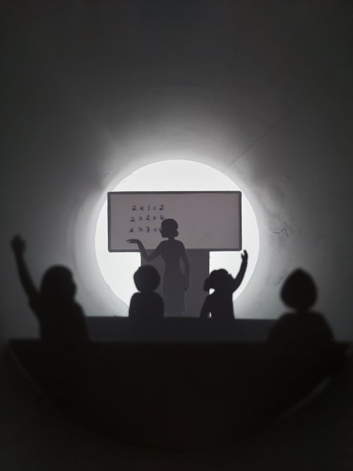

Courses offered in CvSU - Silang Campus
DEPARTMENT OF INFORMATION TECHNOLOGY PROGRAMS
BSCS and BSIT programs are both comprehensive computer courses specifically designed to equip students with the knowledge, skills, and expertise necessary to thrive in the dynamic field of technology. From programming languages to networking fundamentals, both programs offer rigorous curricula tailored to prepare students for diverse career paths in the ever-evolving digital landscape.
Bachelor of Science in Computer Science
BSCS covers essential computer science principles, programming languages, mathematics, and practical skills. Furthermore, graduates emerge well-prepared for careers in software development, IT consulting, and related fields.Bachelor of Science in Information Technology
BSIT focuses on the practical applications of technology in business and organizational settings. In addition, it includes covering areas such as programming, databases, network administration, and cybersecurity. Graduates are prepared for roles in IT management, system analysis, and technology support.DEPARTMENT OF ARTS AND SCIENCES PROGRAMS
Bachelor of Science in Psychology
BS Psych explores the scientific study of human behavior and mental processes. Specifically, it encompasses areas such as cognitive psychology, social psychology, research methods, and counseling. Furthermore, graduates are equipped for careers in counseling, human resources, research, and various fields related to understanding and assisting individuals and groups.DEPARTMENT OF MANAGEMENT PROGRAMS
Explore the Department of Management’s diverse offerings, where BSBA, BSTM, and BSHM programs come together to equip students for versatile career paths. Each program emphasizes fundamental skills in business operations, customer service, and strategic management. Moreover, graduates emerge ready to excel in dynamic industries such as business, tourism, and hospitality.Bachelor of Science in Tourism Management
BSTM is a program that places emphasis on the principles and practices of managing and promoting tourism-related activities. It encompasses various areas, including tourism marketing, hospitality management, and destination planning. Upon completion, graduates are well-equipped for careers in the tourism and hospitality industry, with opportunities spanning roles in travel agencies, event management, and hotel administration.Bachelor of Science in Business Administration
BSBA comprehensively covers business principles and practices. It offers three majors: Marketing Management, Human Resource Management, and Financial Management. Students develop expertise in their chosen specialization, which prepares them for roles in marketing, human resources, and financial analysis upon graduation.Bachelor of Science in Hospitality Management
BSHM is a program that revolves around the principles of managing and operating hospitality-related businesses, such as hotels and restaurants. Additionally, it encompasses various areas, including hotel administration, food service management, and event planning. Upon completion, graduates are well-prepared for diverse careers in the hospitality industry, with opportunities ranging from hotel management to catering and event coordination.TEACHER EDUCATION DEPARTMENT PROGRAMS

Bachelor of Secondary Education
BSE offers majors in Science, English, and Mathematics, constituting a four-year undergraduate program intended to equip students for roles as secondary school teachers in their chosen disciplines. The program emphasizes the development of pedagogical skills, subject-specific knowledge, and effective teaching methodologies. Upon completion, graduates are eligible to teach Science, English, or Mathematics in secondary schools, thereby nurturing learning and academic development in their students.